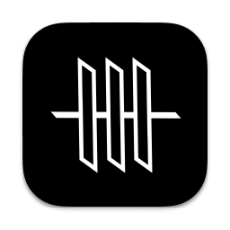
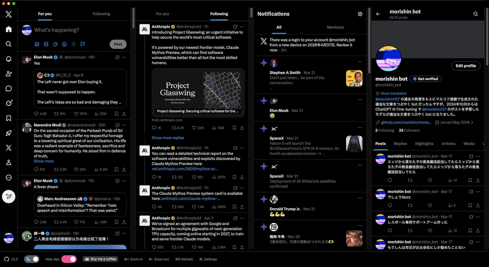

非公式 𝕏 クライアント for macOS
𝕏 のすべてを、
ひとつのウィンドウに。
XDeck は、Mac にマルチカラムのタイムラインを取り戻すアプリです。 フォロー中・リスト・通知・検索を 同時に表示。 広告は静かにブロックされます。

XDeckXDeck は、Mac にマルチカラムのタイムラインを取り戻すアプリです。 フォロー中・リスト・通知・検索を 同時に表示。 広告は静かにブロックされます。

⌘, で settings.json を開いて、カラムを自由に並べ替えられます。フォロー中・おすすめ・通知・プロフィール、リストなど任意の URL も指定可能です。
カラムごとに表示・並び順・幅をカスタマイズ。あなただけのデッキを作りましょう。
{ "$schema": "./schema.json", "columnWidth": 450, "columns": [ { "type": "following" }, { "type": "forYou" }, { "type": "notifications" }, { "type": "profile" }, { "type": "custom", "url": "https://x.com/i/lists/123456789" } ] }